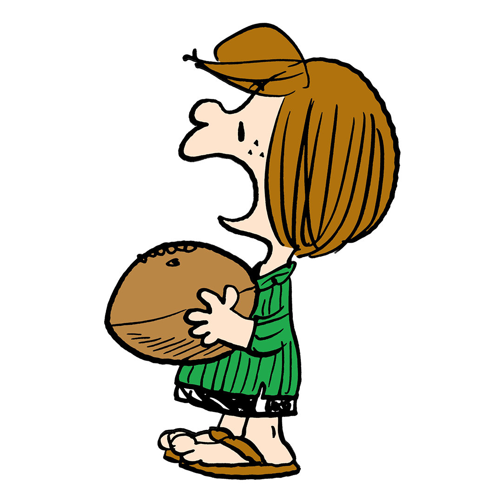

¡Presentamos a los Peanuts!


Más personajes



Snoopyland
El 2 de octubre de 1950, Charles M. Schulz presentó una nueva tira cómica con un héroe inverosímil de cabeza redonda, «el buen Charlie Brown». Así nació PEANUTS. En 2025, Peanuts Worldwide celebra su aniversario 75.º, el grupo de personajes que se han unido al elenco a lo largo del camino: Linus y su malhumorada hermana mayor Lucy; Schroeder, el pianista; Sally; Franklin; sin olvidar a Peppermint Patty, Marcie, Pigpen (y su famosa nube de polvo) y muchos más. Pero nadie ha acaparado tanto la atención como Snoopy, el beagle más cool del planeta.
Conoce los personajes
Descubre la historia detrás de los Peanuts y todo lo que quieras saber.
Si amas este universo tanto como nosotros, ¡deberías darle un vistazo!